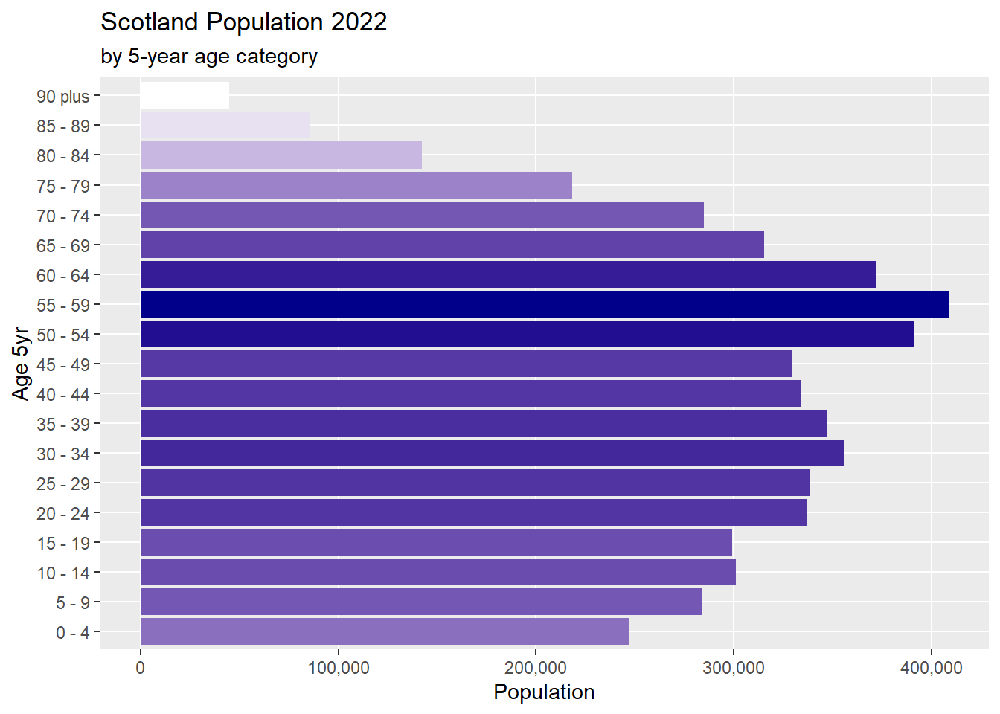

Code
source("./code/get-pop.R")
file_year <- "./data/mid-year-pop-est-19-data.xlsx"
scot_pop19 <- get_pop_year(file_year)
total: 5463300
sum of pop categories: 5463300Code
age_categories <- scot_pop19[, age_cat]In the source data, year of age and population numbers are stored in multiple columns:

source("./code/get-pop.R")
file_year <- "./data/mid-year-pop-est-19-data.xlsx"
scot_pop19 <- get_pop_year(file_year)
total: 5463300
sum of pop categories: 5463300age_categories <- scot_pop19[, age_cat]# Table 3 contains Population by age category
scot_pop22 <- read_excel("./data/scotland-s-census-2022-first-results-rounded-population-estimates-data.xlsx",
sheet = "Table 3",
skip = 3, n_max = 3) |>
setDT()
# First 3 columns are superfluous
scot_pop22[, c("Area name", "Area code", "Area type" ) := NULL]
# remove "All ages" column and calculate totals after processing
scot_pop22[, "All ages" := NULL]
scot_pop22 |>
kable()| Sex | Aged 0-4 years | Aged 5-9 year | Aged 10-14 years | Aged 15-19 years | Aged 20-24 years | Aged 25-29 years | Aged 30-34 years | Aged 35-39 years | Aged 40-44 years | Aged 45-49 years | Aged 50-54 years | Aged 55-59 years | Aged 60-64 years | Aged 65-69 years | Aged 70-74 years | Aged 75-79 years | Aged 80-84 years | Aged 85-89 years | Aged 90+ years |
|---|---|---|---|---|---|---|---|---|---|---|---|---|---|---|---|---|---|---|---|
| Persons | 247100 | 284100 | 301000 | 299100 | 337000 | 338200 | 356000 | 347000 | 334300 | 329500 | 391500 | 408600 | 372100 | 315300 | 284800 | 218300 | 142300 | 85400 | 45000 |
| Females | 120100 | 138300 | 147200 | 146000 | 170500 | 172300 | 182600 | 178200 | 171200 | 169000 | 202400 | 210400 | 191200 | 163300 | 149300 | 118500 | 81900 | 52400 | 29800 |
| Males | 127000 | 145800 | 153900 | 153000 | 166400 | 166000 | 173400 | 168800 | 163100 | 160500 | 189100 | 198200 | 180900 | 152000 | 135400 | 99800 | 60300 | 33100 | 15200 |
This data has three variables:
Sex, stored in the rows,age_category spread across the column names, andscot_pop22 <- scot_pop22 %>%
pivot_longer(
cols = !Sex, # reshape every column apart from "Sex"
names_to = "age",
values_to = "pop",
names_transform = readr::parse_number) |>
clean_names() |>
setDT()
head( scot_pop22 ) sex age pop
1: Persons 0 247100
2: Persons 5 284100
3: Persons 10 301000
4: Persons 15 299100
5: Persons 20 337000
6: Persons 25 338200sex has three categories: Persons, Males, Females.Separate the combined counts, which is given by the “Person” entries in the sex variable
# store Male and Female values for later analysis
# scot_pop22_MF <- scot_pop22[sex %in% c("Males","Females") ,]
# All Persons
scot_pop22 <- scot_pop22[sex == "Persons" ,]
# no longer need the "sex" variable
scot_pop22[, sex := NULL]
# add 'age_cat' column for compatibility with other years
scot_pop22[, age_cat := age_categories][, age := NULL]
setcolorder(scot_pop22, c("age_cat", "pop"))Plot population counts by age category
# suppress scientific notation
options(scipen=20)
library(scales)
ggplot(scot_pop22, aes(age_cat, pop)) +
geom_col(aes(fill = pop)) +
scale_fill_gradient(low = "white", high = "darkblue") +
labs(title = "Scotland Population 2022",
subtitle = "by 5-year age category",
x = "Age 5yr", y = "Population") +
scale_y_continuous(labels = scales::label_comma()) +
theme(legend.position = "none") +
coord_flip()
# Table 1 contains Population by each year of
scot_pop21 <- read_excel("./data/mid-year-pop-est-21-data.xlsx",
sheet = "Table 1",
skip = 3, n_max = 3) |>
# clean_names() |>
setDT()
# First 3 columns are superfluous
scot_pop21[, c("Area name", "Area code", "Area type" ) := NULL]
# remove "All ages" column and calculate totals after processing
scot_pop21[, "All ages" := NULL]Inspect the Data
scot_pop21[, 1:10] Sex 0 1 2 3 4 5 6 7 8
1: Persons 46782 49017 51478 53317 54843 57070 57945 58262 59490
2: Males 23961 25131 26485 27398 28339 29530 29710 29948 30459
3: Females 22821 23886 24993 25919 26504 27540 28235 28314 29031Check the final column
scot_pop21[, 92] 90+
1: 45321
2: 14421
3: 30900This data has three variables:
Sex, stored in the rows,age spread across the column names, andpivot_longer:
names_to gives the name of the variable that will be created from the data stored in the column names, i.e. year of agevalues_to gives the name of the variable that will be created from the data stored in the cell value, i.e. population countEntries in the age column are in character format. readr::parse_number() extracts numeric values and automatically strips non-numeric components, so it can deal with the “90+” entry
scot_pop21 <- scot_pop21 %>%
pivot_longer(
cols = !Sex, # reshape every column apart from "Sex"
names_to = "age",
values_to = "pop",
names_transform = readr::parse_number) |>
clean_names() |>
setDT()Separate the combined counts, which is given by the “Person” entries in the sex variable
# store Male and Female values for later analysis
# scot_pop21_MF <- scot_pop21[sex %in% c("Males","Females") ,]
# counts for male + female
scot_pop21 <- scot_pop21[sex == "Persons" ,]Need to combine rows of age to 5-year age categories and to sum the associated population numbers. Bear in mind that the “90” entry refers to ages 90 and above. This means that there will be 18 age categories with an additional one for over 90.
# "sex" column is no longer needed
scot_pop21[, sex := NULL]
over90 <- scot_pop21[91, pop]
scot_pop21 <- scot_pop21[-91,]
# Create a grouping variable
scot_pop21[, age_cat := cut2(age, g = 18)]
# sum the number of deaths in each age category
scot_pop21_cats <- scot_pop21[, sum(pop), by = age_cat]
scot_pop21_cats[, pop := V1][, V1 := NULL]
# append an entry for the 90 plus group
oldest <- data.table(age_cat = as.factor("90 plus"),
pop = over90)
scot_pop21 <- rbind(scot_pop21_cats, oldest)
# update "age_cat" column for compatibility with other years
scot_pop21[, age_cat := age_categories]
rm(scot_pop21_cats, oldest, over90)file_year <- "./data/mid-year-pop-est-18-tabs.xlsx"
scot_pop18 <- get_pop_year(file_year)
total: 5438100
sum of pop categories: 5438100file_year <- "./data/mid-year-pop-est-17-all-tables-revised.xlsx"
scot_pop17 <- get_pop_year(file_year)
total: 5424800
sum of pop categories: 5424800source("./code/get-pop-16.R")
file_year <- "./data/16-mid-year-pe-tab1.xlsx"
scot_pop16 <- get_pop_2016(file_year)
total: 5404700
sum of pop categories: 5404700file_year <- "./data/15mype-cahb-tab1.xlsx"
scot_pop15 <- get_pop_year(file_year)
total: 5373000
sum of pop categories: 5373000file_year <- "./data/14mype-cahb-all-tab.xlsx"
scot_pop14 <- get_pop_year(file_year)
total: 5347600
sum of pop categories: 5347600file_year <- "./data/13mype-cahb-tab1.xlsx"
scot_pop13 <- get_pop_year(file_year)
total: 5327700
sum of pop categories: 5327700file_year <- "./data/12mype-cahb-tab1.xlsx"
scot_pop12 <- get_pop_year(file_year)
total: 5313600
sum of pop categories: 5313600Inspect the Data
# File contains a single sheet
scot_pop11 <- read_excel("./data/scotland-census-2011.xlsx",
sheet = "Data Sheet 0",
skip = 10, n_max = 3) |>
setDT()
# Second columns is superfluous
scot_pop11[, c("...2" ) := NULL]
# remove "All people" column and calculate totals after processing
scot_pop11[, c("All people", "Age") := NULL]
# remove second row since it contains NAs
scot_pop11 <- scot_pop11[2, ]
scot_pop11 |>
kable()| Under 1 | 1 | 2 | 3 | 4 | 5 | 6 | 7 | 8 | 9 | 10 | 11 | 12 | 13 | 14 | 15 | 16 | 17 | 18 | 19 | 20 | 21 | 22 | 23 | 24 | 25 | 26 | 27 | 28 | 29 | 30 | 31 | 32 | 33 | 34 | 35 | 36 | 37 | 38 | 39 | 40 | 41 | 42 | 43 | 44 | 45 | 46 | 47 | 48 | 49 | 50 | 51 | 52 | 53 | 54 | 55 | 56 | 57 | 58 | 59 | 60 | 61 | 62 | 63 | 64 | 65 | 66 | 67 | 68 | 69 | 70 | 71 | 72 | 73 | 74 | 75 | 76 | 77 | 78 | 79 | 80 | 81 | 82 | 83 | 84 | 85 | 86 | 87 | 88 | 89 | 90 | 91 | 92 | 93 | 94 | 95 | 96 | 97 | 98 | 99 | 100 and over |
|---|---|---|---|---|---|---|---|---|---|---|---|---|---|---|---|---|---|---|---|---|---|---|---|---|---|---|---|---|---|---|---|---|---|---|---|---|---|---|---|---|---|---|---|---|---|---|---|---|---|---|---|---|---|---|---|---|---|---|---|---|---|---|---|---|---|---|---|---|---|---|---|---|---|---|---|---|---|---|---|---|---|---|---|---|---|---|---|---|---|---|---|---|---|---|---|---|---|---|---|---|
| 58715 | 59556 | 58909 | 58764 | 56877 | 55224 | 55236 | 53786 | 52325 | 53046 | 55067 | 56769 | 58656 | 59971 | 61152 | 62278 | 62145 | 64121 | 68130 | 74152 | 74835 | 72001 | 72969 | 73783 | 70352 | 70288 | 69246 | 67813 | 68342 | 69943 | 69202 | 67429 | 64193 | 60491 | 60380 | 63609 | 64355 | 66397 | 70159 | 75536 | 76562 | 76474 | 79587 | 80953 | 81122 | 81314 | 84376 | 82601 | 82554 | 80084 | 78847 | 75598 | 75660 | 73955 | 71767 | 69190 | 67232 | 66128 | 64782 | 63559 | 63996 | 64709 | 66339 | 70598 | 70880 | 53361 | 55060 | 54012 | 51495 | 47270 | 45155 | 46168 | 44637 | 43297 | 41337 | 39583 | 37832 | 35211 | 33146 | 32342 | 30065 | 27162 | 25170 | 21669 | 20459 | 18626 | 15898 | 14181 | 12024 | 10778 | 9439 | 6975 | 4331 | 3321 | 2840 | 2241 | 1825 | 1174 | 857 | 539 | 854 |
This data has two variables:
age spread across the column names, andNeed to pivot_longer to create age column and to transpose age values from row to column format.
# Rename "Under 1" column to "0"
# to represent first year of life
setnames(scot_pop11, "Under 1", "0")
scot_pop11 <- scot_pop11 %>%
pivot_longer(
cols = "0":"100 and over",
names_to = "age",
values_to = "pop",
names_transform = readr::parse_number) |>
clean_names() |>
setDT()
head(scot_pop11, 10) age pop
1: 0 58715
2: 1 59556
3: 2 58909
4: 3 58764
5: 4 56877
6: 5 55224
7: 6 55236
8: 7 53786
9: 8 52325
10: 9 53046Aggregate rows for ages 90 and above into a single entry for compatibility with data for 2022 and 2021.
over90 <- scot_pop11[91:101, sum(pop)]
# remove rows for age 90 and above
scot_pop11 <- scot_pop11[1:90, ]Combine rows into 5-year age categories
# Create a grouping variable
scot_pop11[, age_cat := cut2(age, g = 18)]
# sum the number of deaths in each age category
scot_pop11_cats <- scot_pop11[, sum(pop), by = age_cat]
scot_pop11_cats[, pop := V1][, V1 := NULL]
# append an entry for the 90 plus group
oldest <- data.table(age_cat = as.factor("90 plus"),
pop = over90)
scot_pop11 <- rbind(scot_pop11_cats, oldest)
# update "age_cat" for compatibility with other years
scot_pop11[, age_cat := age_categories]
# Cleanup
rm(scot_pop11_cats, oldest, over90)Save cleaned data tables
scot_all <- ls()[sapply(ls(), function(x) is.data.frame(get(x)))]
save(list = scot_all, file = "./data-clean/scot-pop.RData")
# Cleanup the environment
# keep 'age_categories' vector
remove(list = scot_all)
rm(get_pop_2016, get_pop_year, file_year, scot_all)Table 5.02 contains deaths, by sex, age, and administrative area, Scotland
file_year <- "./data/vital-events-22-ref-tabs-5.xlsx"
scot_mort22 <- get_mort_year(file_year)file_year <- "./data/vital-events-21-ref-tabs-5.xlsx"
scot_mort21 <- get_mort_year(file_year)file_year <- "./data/vital-events-20-ref-tabs-5.xlsx"
scot_mort20 <- get_mort_year(file_year)file_year <- "./data/vital-events-19-ref-tabs-5.xlsx"
scot_mort19 <- get_mort_year(file_year)file_year <- "./data/vital-events-18-ref-tabs-5.xlsx"
scot_mort18 <- get_mort_year(file_year)file_year <- "./data/vital-events-17-ref-tabs-5.xlsx"
scot_mort17 <- get_mort_year(file_year)source("./code/get-mort-5-2.R")
file_year <- "./data/vital-events-16-ref-tabs-5-2.xlsx"
scot_mort16 <- get_mort_5_2(file_year)file_year <- "./data/vital-events-15-ref-tabs-5-2.xlsx"
scot_mort15 <- get_mort_5_2(file_year)file_year <- "./data/vital-events-14-ref-tabs-5-2.xlsx"
scot_mort14 <- get_mort_5_2(file_year)file_year <- "./data/vital-events-13-ref-tabs-5-2.xls"
scot_mort13 <- get_mort_5_2(file_year)file_year <- "./data/vital-events-12-ref-tabs-5-2.xls"
scot_mort12 <- get_mort_5_2(file_year)file_year <- "./data/vital-events-11-ref-tabs-5-2.xls"
scot_mort11 <- get_mort_5_2(file_year)Save data tables that are in “tidy data” format
mort_all <- ls()[sapply(ls(), function(x) is.data.frame(get(x)))]
save(list = mort_all, file = "./data-clean/scot-mort.RData")
# Cleanup the environment
# keep 'age_categories' vector
remove(list = mort_all)
rm(get_mort_year, get_mort_5_2, file_year, mort_all)